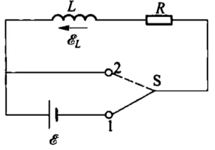

当一个自感与电阻组成LR电路，在0突变到U或U突变到0的阶跃电压作用下，由于自感的作用，电路中的电流不会瞬间突变.
电容与电阻组成的RC电路，在阶段电压的作用下，电容上的电压不会瞬间突变.
这种在阶跃电压作用下，从开始发生变化到逐渐趋于稳态的过程称为暂态过程.
本节将研究暂态过程的特点与规律.

考虑如图所示的电路，当开光拨向1时，一个从0到U的阶跃电压作用在LR电路上，由于有自感，电流的变化使电路中出现自感电动势：
$$U_L = -L\frac{\mathrm{d}I}{\mathrm{d}t}$$按照楞次定律，这个电动势是反抗电流增加的.
设电源电动势为U，内阻为0，接通电源后，在任何瞬时，电路内总的电动势为：
$$U + U_L = U - L\frac{\mathrm{d}I}{\mathrm{d}t}$$按照欧姆定律：
$$U - L\frac{\mathrm{d}I}{\mathrm{d}t} = IR$$[注]此处电流虽不是恒定的，但若变化不快可看成似稳的，欧姆定律仍然成立.
$$I - \frac{U}{R} = Ke^{-\frac{R}{L}t}$$其中\(K\)为积分常量，需由初始条件\(t = 0\)时刻的电流值确定.
我们选取接通电源的时刻作为计时的零点，从物理上看，未接通电源前电路中不存在电流；接通电源后电感线圈中的电流增加，随机产生反方向的感应电动势阻碍电流的增加.
因此，在接通电源的开始，电流只能从0逐渐增加而不能突变，即\(I(0) = 0\).
代入初始条件，得：
$$K= -\frac{U}{R}$$方程满足初始条件的解为：
$$I = \frac{U}{R}(1 - e^{-\frac{R}{L}t})$$按照上式可以画出不同\(\frac{L}{R}\)比值下电流\(I\)随时间\(t\)的变化曲线.
可以看出，接通电流后，\(I\)经过一指数增长过程逐渐达到恒定值\(I(t\rightarrow\infty) = \frac{U}{R}\).
电路中\(\frac{L}{R}\)值不同，达到恒定值的过程持续的时间也不同.
\(\frac{L}{R}\)具有时间的量纲，可以用\(\tau\)表示：
$$\tau = \frac{L}{R}$$\(t = \tau\)时，有：
$$I(\tau) \approx 0.63I_0$$\(t = 5\tau\)时，有：
$$I(5\tau) \approx 0.994I_0$$即经过\(5\tau\)时间后，暂态过程基本结束.